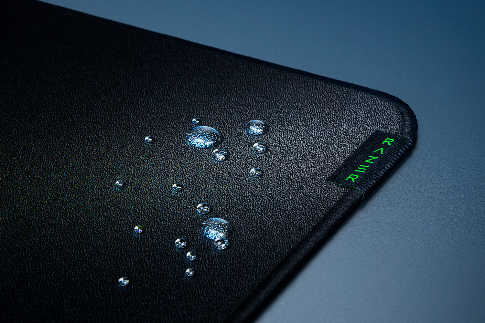
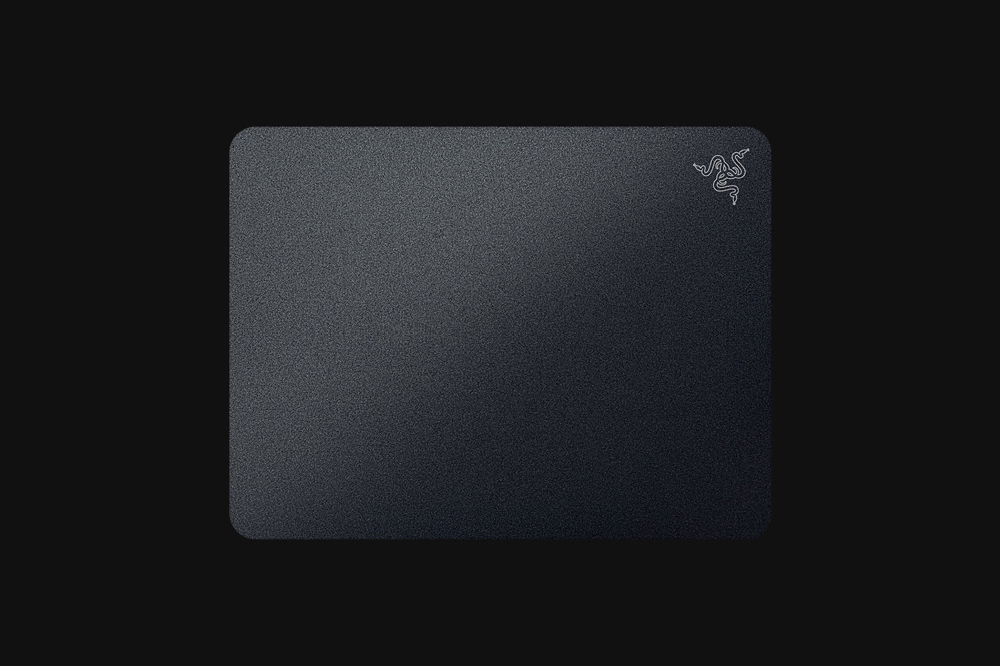

With 16.8 million colors, countless patterns, dynamic in-game
lighting effects—experience full RGB customization and deeper immersion
with the world’s largest lighting ecosystem for gaming devices.
Supporting a growing list of thousands of devices and hundreds of games
& applications, take it to the next level with advanced features such as
Chroma Studio, Visualizer, Connect and Workshop.
MICRO-TEXTURED SURFACE
The surface of the Razer Firefly V2 is calibrated for all optical mouse sensors
and lab tested to ensure pixel-precise tracking between your mouse and cursor,
allowing you to aim and maneuver with greater accuracy.
BUILT-IN CABLE CATCH
Manage your mouse cable neatly to prevent it from being entangled, reducing
drag for smoother mouse swipes when gaming.
ALL-ROUND EDGE LIGHTING
With 19 lighting zones, every side of the mouse mat is covered and capable
of handling the most advanced, intricate RGB lighting patterns.
OPTIMIZED SURFACE COATING
Whether you favor speed, control, or a balance of both, the mat’s coating provides
the right amount of friction and glide that caters to any playstyle.
ULTRA-THIN FORM FACTOR WITH ANTI-SLIP BASE
At just 3mm, it’s thin enough for your wrist to rest comfortably on your desk,
while the anti-slip rubber base keeps the mat in place during intense gameplay.
Razer Strider

Fusion of Hybrid Soft and Hard Mat
Crafted for the optimal balance of speed and control—with a light glide for quick
flicks, and solid stopping power for consistent precision.
MID-TO-FIRM BASE
At 3mm thick, the hybrid mouse mat’s sturdy design provides a consistent
foundation to game on.
ANTI-SLIP
Our hybrid mouse mat is reinforced with a grooved rubber underside to truly anchor
it to your desk.
WARP-RESISTANT
Never worry about the mat stretching or losing its shape as it is thick enough to
prevent warping from regular use.
STITCHED EDGES
Protective stitching along its edges prevents any fraying that might result from
intense use or transportation.
WATER-RESISTANT
The mat’s surface can shrug off any spills, which also allows for easy routine
cleaning with a quick wipe down.
Razer Acari

MAXIMUM SPEED AND GLIDE
Designed for a low coefficient of friction, the Acari lets you make larger,
quicker swipes effortlessly, reducing fatigue. For the absolute optimal glide,
pair it with a gaming mouse with 100% PTFE feet.
BEADED, TEXTURED HARD SURFACE
Optimized for greater precision, the mat’s ultraviolet-activated nano-bead surface
is layered with an oleophobic coating, and lab-tested to ensure maximum tracking
accuracy and responsiveness with all current-gen Pixart sensors, keeping your aim true.
LARGE SURFACE AREA
Larger than the average medium-sized gaming mouse mat, the Acari’s generous 420 x 320mm surface
allows you to make broad swipes without worry of running out of space, especially if you’re on
a low DPI setting.
THIN FORM FACTOR
As thin as a nickel, the Acari’s lean form factor of 1.95mm is perfectly flat throughout,
minimizing any possible discomfort when your wrist rests or moves along the edge of the
mat as you game.
STURDY RESIN BUILD
The mat’s surface is waterproof and humidity-resistant, allowing for a longer lifespan and
easy routine cleaning.
ANTI-SLIP BASE
The mat’s rubberized base is reinforced with a special grip texture that maintains a firm
hold on your desk, ensuring a rock-solid foundation when you’re making those epic flicks.